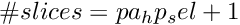

Configuration of Power Amplifier. More...
#include </home/dhoover/git/target/lib/lr1110_driver/src/lr1110_radio_types.h>
Data Fields | |
| lr1110_radio_pa_selection_t | pa_sel |
| Power Amplifier selection. | |
| lr1110_radio_pa_reg_supply_t | pa_reg_supply |
| Power Amplifier regulator supply source. | |
| uint8_t | pa_duty_cycle |
| Power Amplifier duty cycle (Default 0x04) | |
| uint8_t | pa_hp_sel |
| Number of slices for HPA (Default 0x07) | |
Detailed Description
Configuration of Power Amplifier.
pa_duty_cycle controls the duty cycle of Power Amplifier according to:  It can be used to adapt the TX multi-band operation using a single-matching network.
It can be used to adapt the TX multi-band operation using a single-matching network.
The allowed duty cycle values for LPA are from 0.2 to 0.48 (by step of 0.04). Therefore possible values for pa_duty_cycle go from 0 to 7.
The allowed duty cycle values for HPA go from 0.2 to 0.36 (by step of 0.04). Therefore in this case, the possible values for pa_duty_cycle go from 0 to 4.
pa_hp_sel controls the number of slices for HPA according to: 